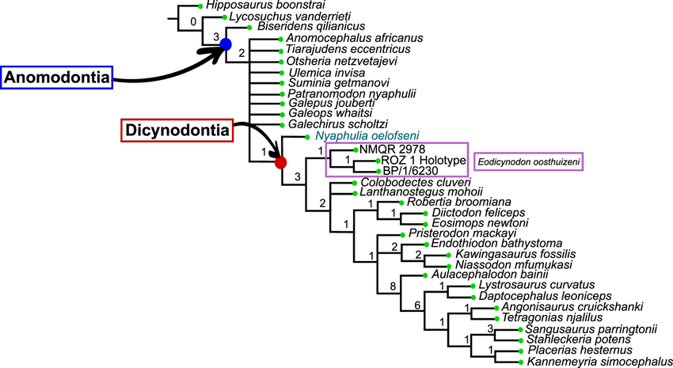
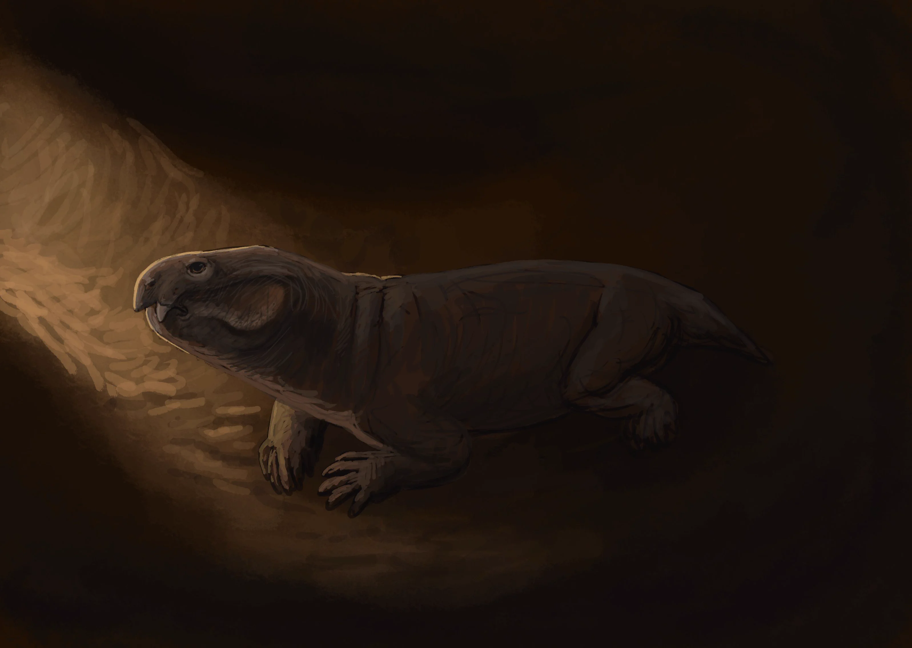
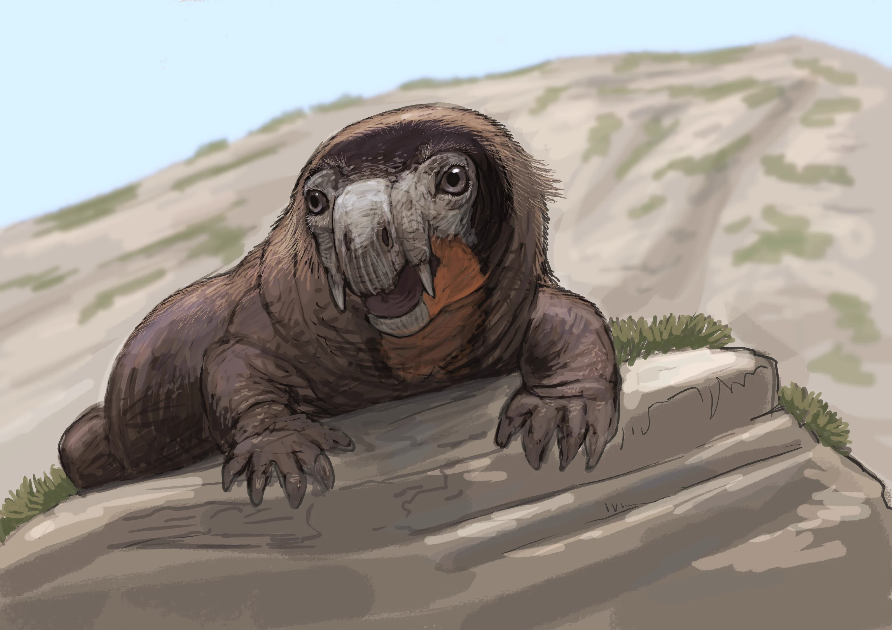
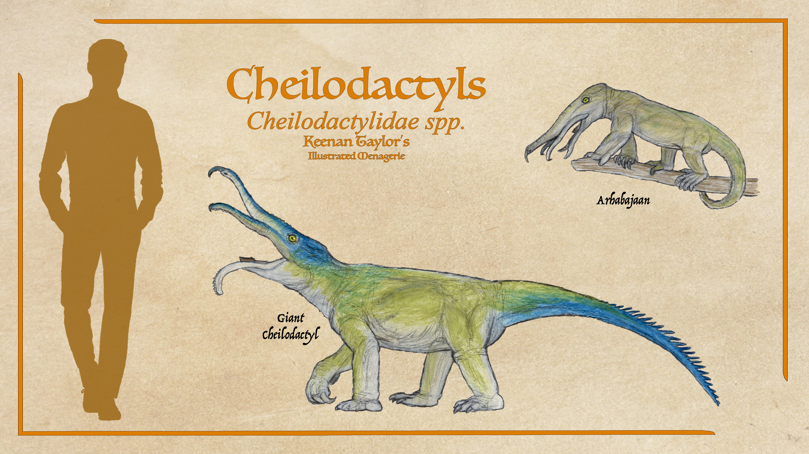
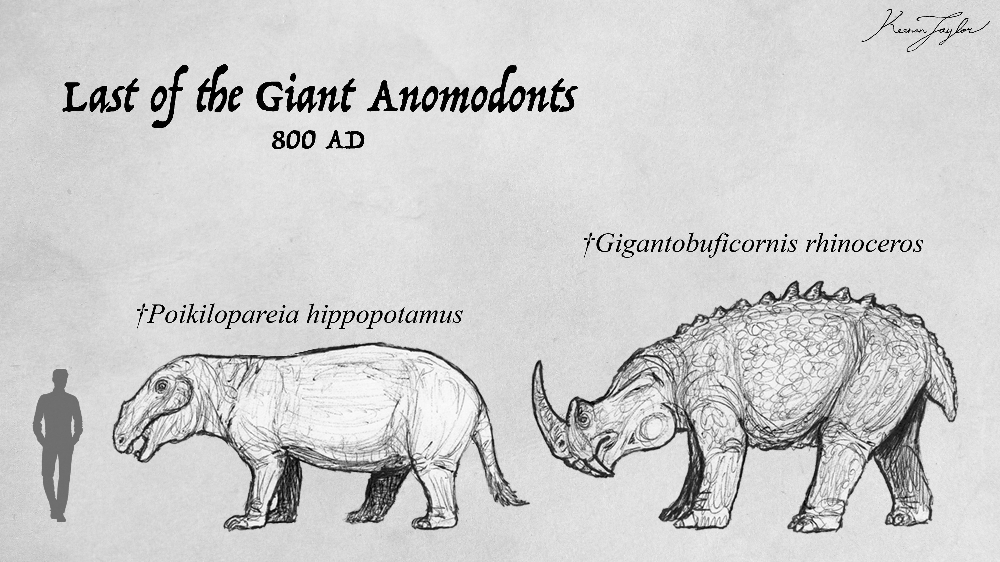
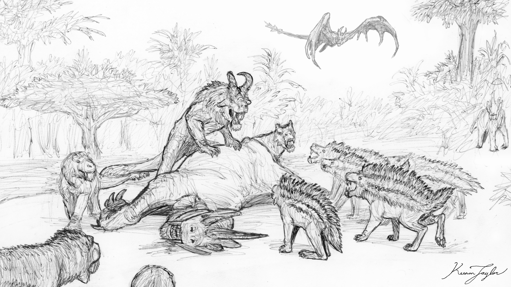
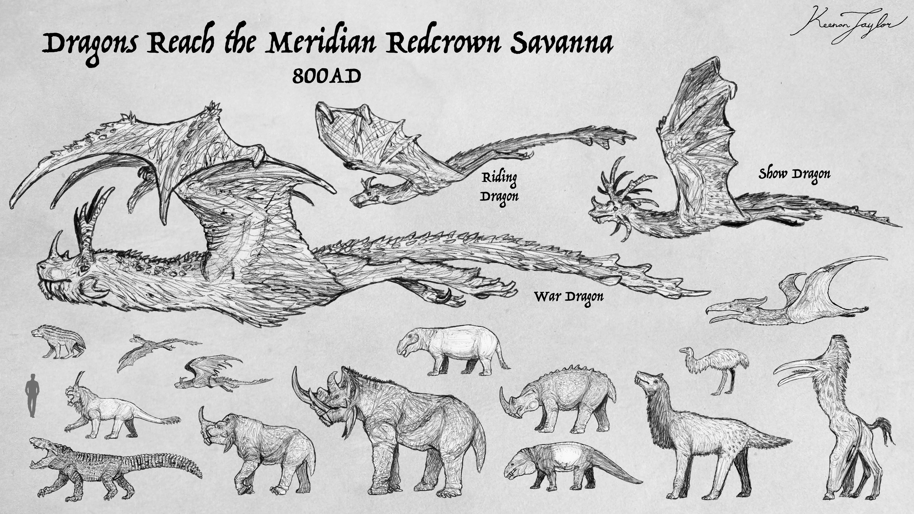
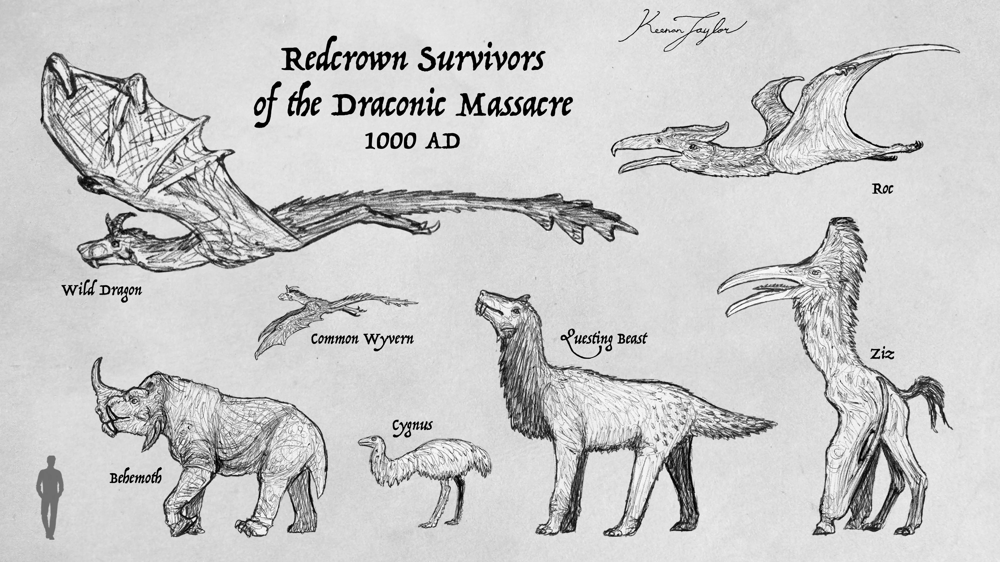
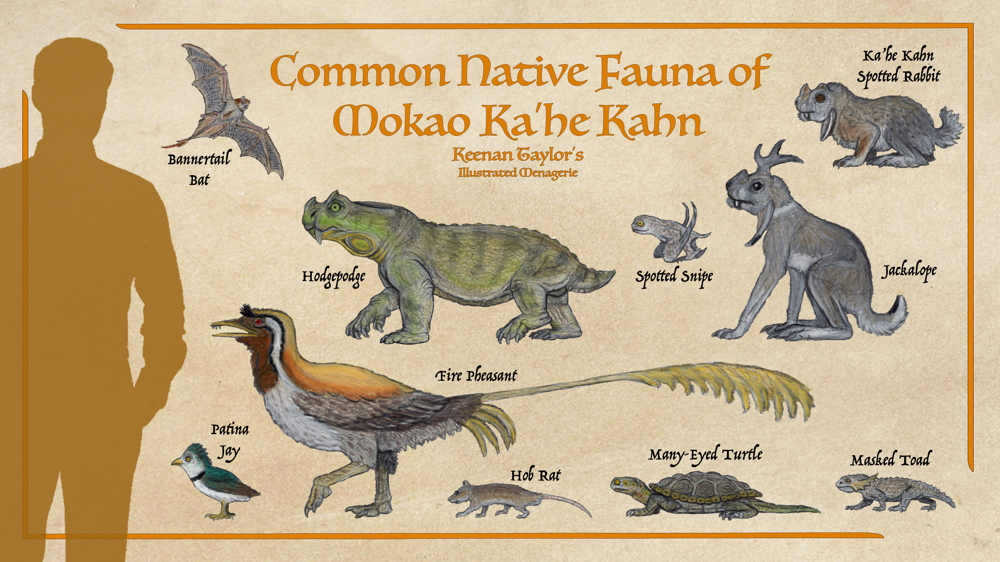
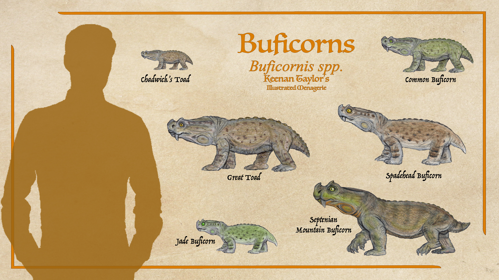

Scientific Classification
| Kingdom | Animalia | Animalia | Animalia |
|---|---|---|---|
| Phylum | Chordata | Animalia | Animalia |
| Clade | Synapsida | Animalia | Animalia |
| Clade | Sphenacodontia | Animalia | Animalia |
| Clade | Therapsida | Animalia | Animalia |
| Suborder | Anomodontia | Animalia | Animalia |
| Clade | Dicynodontia | Animalia | Animalia |
| Clade | Buficornia | Animalia | Animalia |
Taxonomic note: This is a simplified reference classification. The placement of individual Kaimeran lineages should be documented separately where their evolutionary relationships remain uncertain.
01 · INTRODUCTION
Overview

Buficornia is a clade of anomodont therapsids commonly known as buficorns or horned toads, endemic to the Permian Islands of Kaimere. Although formerly represented by several lineages of large-bodied herbivores, including formidable inhabitants of the Meridian savannas, the surviving members are predominantly small, terrestrial burrowers. They are among the most widespread and recognizable native dicynodonts of the Permian Islands, where dozens of species occupy habitats ranging from humid tropical forests to temperate woodlands and cold upland environments. Their persistence is particularly remarkable given the extensive extinction of island megafauna during the last millennium.
Anomodonts were among the most successful groups of non-mammalian therapsids during the Permian. Predominantly herbivorous, they underwent substantial diversification and became particularly important following the decline of the dinocephalians during the latter portion of the period. Their evolutionary success was principally associated with the development of specialized feeding structures and a variety of body plans suited to terrestrial herbivory. Among their most recognizable representatives were the dicynodonts, distinguished by their characteristic beaked jaws and, in most species, a pair of prominent tusks toward the front of the mouth. The majority possessed toothless beaks, using their remaining tusks and specialized oral structures to process vegetation.
Dicynodonts were the only major anomodont lineage to survive the Permian-Triassic mass extinction, commonly known as the Great Dying. Their subsequent history on Earth was relatively brief, but their descendants persisted through the early Triassic and became important components of several terrestrial ecosystems. The notorious Lystrosaurus, for example, achieved extraordinary abundance in numerous fossil assemblages near the Permian-Triassic boundary.
On Kaimere, however, dicynodonts experienced a substantially different evolutionary history. Their survival and subsequent diversification were facilitated by the absence of the ecological disruptions that accompanied the end-Permian extinction on Earth, as well as by the planet's successive introductions of terrestrial organisms. In the modern era, dicynodonts are particularly conspicuous on the Permian Continent, where neodicynodonts constitute a substantial proportion of terrestrial megafauna. Their large-bodied representatives dominate many of the continent's major herbivore communities, making it the region most closely associated with the group.
The Permian Continent is not, however, the only region in which dicynodonts have flourished. Marine members of two independently evolved neodicynodont families occur throughout much of Kaimere's oceans, with the shores and shallow seas of the Known World representing the principal exception. Terrestrial dicynodonts are also distributed across mainland Kairul, northern Ni'Khar, the Crown of Kairul, the islands off the North Polar Continent, and the Permian Islands. The Known World is comparatively unusual in its scarcity of terrestrial dicynodonts, with the mogao representing its principal surviving anomodont.
The Permian Islands possess a particularly distinctive dicynodont fauna. Their indigenous lineages diverged from those of the Permian Continent during an extraordinarily ancient period, with the two populations separated by more than 250 million years of evolutionary history. Despite superficial anatomical similarities, the island dicynodonts do not represent a recent offshoot of the neodicynodont radiation. They belong to independently evolved lineages that diversified after the isolation of the Permian Islands from the landmass that now forms southern Ni'Khar.
Buficornia is one of two major native dicynodont clades recognized among the Permian Islands' surviving fauna. Its members are distinguished by a relatively conservative cranial structure, a particularly unusual auditory arrangement, and a dentition that retains substantially more functional teeth than that of many other dicynodonts. Unlike the neodicynodonts of the Permian Continent, which have largely abandoned conventional chewing in favor of processing vegetation with their beaks, tusks, tongues, and rough palates, buficorns remain active chewers. Their jaws contain numerous teeth, including functional molars, and their feeding apparatus is adapted to repeated oral processing.
The group's most conspicuous anatomical characteristic is its ears. As in other non-mammalian therapsids of the Permian Islands, the buficorn auditory structures are incorporated into the lower jaw. This arrangement is particularly exaggerated in Buficornia, in which the jaw forms an important component of the auditory apparatus. Unlike neodicynodonts, buficorns are capable of detecting airborne sounds in a manner comparable to mammals, pithedactyls, and eborfeltherians. However, their unusual auditory organization produces an important limitation: they appear to be almost entirely incapable of hearing while chewing. The movement and activity of the jaw during feeding interfere with the reception of sound, forcing individuals to interrupt oral processing when they need to listen carefully.
The evolutionary history of Buficornia has been characterized by considerable changes in body size and ecological specialization. During the Tyrant Dynasty, buficorns included large herbivores that occupied important positions in woodland and savanna ecosystems. Their descendants persisted through the Dynastic Extinction and subsequently diversified alongside another native dicynodont clade and the nondicynodont salmotheres. Some of these lineages became among the most abundant large herbivores of the Permian Islands, especially on Meridia and Occidia.
Their final megafaunal representatives disappeared during the catastrophic ecological disruption associated with the dispersal of captive dragons around the beginning of the second millennium. The extinction of these large herbivores left the island ecosystems substantially reorganized. Although small buficorns survived, their giant relatives were lost, and the modern group is consequently dominated by species adapted to burrowing, small-scale herbivory, and the exploitation of environments unsuitable for larger animals.
The living Buficornia are therefore remnants of a formerly much more diverse radiation. Their present abundance, wide geographical distribution, and unusual anatomical characteristics make them among the most important surviving representatives of the Permian Islands' ancient therapsid fauna.
02 · DEEP TIME
Evolutionary History

The evolutionary origins of Buficornia lie within the broader history of the anomodonts, a major radiation of non-mammalian therapsids that became prominent during the Permian. Their ancestors were terrestrial synapsids that developed specialized adaptations for herbivory, allowing them to exploit vegetation across a variety of terrestrial environments. As anomodont diversity increased, they gradually replaced many of the dinocephalians that had previously occupied important herbivorous niches. Their success was particularly apparent during the latter half of the Permian, when dicynodonts became among the most abundant and geographically widespread terrestrial vertebrates.
Early anomodonts exhibited considerable anatomical diversity. Some possessed relatively generalized skulls and dentitions, while others developed increasingly specialized feeding structures. The dicynodonts represented one of the most successful evolutionary outcomes of this radiation. Their characteristic beaks allowed them to crop vegetation, while their tusks provided additional tools for feeding, defense, and possibly intraspecific interactions. Their bodies subsequently diversified into a range of forms, including burrowers, generalized terrestrial herbivores, and large-bodied browsers.

The Permian-Triassic extinction eliminated most anomodont lineages, leaving dicynodonts as the sole survivors of the group. This surviving radiation subsequently underwent renewed diversification. On Earth, dicynodonts remained important during the Triassic before eventually disappearing. On Kaimere, however, their evolutionary history continued under a different set of environmental conditions.
The ancestors of the Permian Islands' indigenous dicynodonts became established on a landmass that was once connected to what is now southern Ni'Khar, when Ni'Khar formed part of Kairul. During the early Permian Dynasty, this region separated from the surrounding continental landmass, initiating a prolonged period of geographical isolation. The Permian Islands consequently developed their own evolutionary history, retaining lineages that became increasingly distinct from those elsewhere on Kaimere.
The Permian Continent, meanwhile, formed part of northeastern Kairul. For a considerable period, naturalists assumed that the Permian Continent and the Permian Islands had once been connected, explaining the similarities between their relic Permian faunas through a relatively recent shared history. Subsequent geological and phylogenetic interpretations have challenged this assumption. Although the regions may have experienced occasional contact, their respective dicynodont populations appear to have been separated for an exceptionally long period.
The dicynodonts of the Permian Islands and the neodicynodonts of the Permian Continent may share certain superficial anatomical features, but these similarities do not indicate a close modern relationship. Their divergence extends back more than 250 million years, and their respective evolutionary histories have been shaped by substantially different ecological conditions. The enormous neodicynodonts of the Permian Continent represent a much later radiation, whereas the island dicynodonts preserve the descendants of a substantially older diversification.
The two native dicynodont clades of the Permian Islands appear to have diverged relatively soon after the separation of the original landmass from Ni'Khar. One of these lineages eventually gave rise to the Buficornia, while the other developed into a separate radiation whose members include the unusual xenocephalians. Both groups underwent extensive diversification, but their anatomical specializations differed considerably.
During their early evolution, the ancestors of Buficornia developed a distinctive combination of feeding and auditory characteristics. Their dentition remained comparatively extensive, retaining teeth behind the prominent anterior structures characteristic of their dicynodont ancestry. This condition suggests a lineage derived from an early dicynodont grade that retained more of the ancestral dental arrangement than the highly tooth-reduced forms that later became prominent elsewhere. Eodicynodon, which retained teeth beyond the maxillary tusks, provides a useful comparison for the proposed ancestral condition, although the precise relationships between this form and the island lineage remain uncertain.
The retention of functional teeth had important consequences for the group's subsequent anatomy. Whereas many derived dicynodonts increasingly relied on their beaks, tongues, and rough palates to process vegetation, buficorns retained an active chewing mechanism. Their molars and associated jaw musculature permitted repeated processing of plant material, producing a feeding system that remained comparatively conservative despite the substantial body-size changes that occurred within the group.
Their auditory structures evolved alongside this feeding apparatus. The unusual incorporation of the ears into the lower jaw is widespread among the non-mammalian therapsids of the Permian Islands, but in buficorns the arrangement became especially pronounced. Their auditory adaptation permitted the detection of airborne sounds, a capability not expressed in the same way among the neodicynodonts of the Permian Continent. Nevertheless, the mechanical interference caused by active chewing imposed a persistent limitation. Buficorns appear to lose much of their ability to hear while feeding, a constraint that may have influenced their behavior and reliance on other sensory information.
The evolutionary radiation of Buficornia was not initially restricted to small burrowing forms. During the Tyrant Dynasty, the Permian Islands supported a much more extensive megafauna of anomodonts. Numerous dicynodonts and two separate clades of nondicynodont anomodonts developed large body sizes, occupying browsing and grazing niches in woodlands and open redcrown savannas. Although large cynodonts were also present, anomodonts were the most common large herbivores across many of these environments.
The large buficorns were among the important representatives of this radiation. Their body plans differed substantially from those of modern small species, although their skulls retained the general structural characteristics of their lineage. Their success reflected the availability of extensive vegetation and the ecological opportunities created by the diversification of island ecosystems. The Permian Islands supported a range of large herbivorous organisms, and the anomodonts occupied many of the feeding niches associated with woodland browsing and open-country grazing.
The skulls of these large dicynodonts remained comparatively conservative. This was not unique to Buficornia but reflected a broader pattern among the island anomodonts. Their bodies could vary substantially in proportions and ecological specialization without producing equivalent variation in cranial structure. The similarity between the skulls of different neodicynodonts is partly attributable to their relatively recent common ancestry, approximately 30 — 40 million years ago. The island lineages, however, demonstrate that cranial conservatism can arise through additional constraints associated with feeding anatomy.
The beak is particularly important in this regard. Mammalian herbivores possess flexible lips and other soft-tissue structures that allow considerable variation in the manipulation and processing of food. The absence of comparable structures in most dicynodonts restricts the range of feeding adaptations available through changes to the skull. Their beaks provide an effective means of cropping vegetation, but the relatively standardized arrangement of the jaws limits the degree of cranial differentiation that can evolve without substantially altering the underlying feeding mechanism.
This helps explain why even ecologically different dicynodonts, including the macropredatory griffins and browsing hippogriffs of the Permian Continent, retain broadly similar cranial proportions. Their bodies may be adapted to very different modes of life, but their skulls remain constrained by a common beaked feeding apparatus.

The xenocephalians of the Permian Islands provide a notable exception to this general pattern. In these animals, cheek and nasal tissue extends over the beak, and the beak itself is reduced to structures resembling exposed dental surfaces. In several forms, these structures are partially or completely concealed by the surrounding soft tissues. Their cleft lips are not as flexible as those of mammals, but they permit a greater degree of food manipulation than is typical of other dicynodonts. Species possessing elongated lips or prehensile trunks can exhibit particularly elaborate feeding movements.
The contrast between xenocephalians and buficorns is therefore not simply one of evolutionary ancestry but also of anatomical specialization. Xenocephalians developed a more extensive role for the soft tissues surrounding the mouth, while buficorns retained an active chewing apparatus and a more conventional dicynodont feeding arrangement. The two lineages represent separate evolutionary solutions to the limitations imposed by the dicynodont skull.
The most basal and abundant xenocephalians are the semiaquatic Mastirhamphids of the Crocodile Jungles. These relatively slow-moving herbivores generally weigh between five and forty kilograms. Their ecological and anatomical characteristics illustrate how extensively the Permian Islands' native dicynodonts diversified, even while retaining some of the characteristic features of their ancient ancestry.
Following the Dynastic Extinction the ecological structure of the Permian Islands changed considerably. Many of the most successful large herbivores disappeared, including numerous members of the earlier anomodont radiations. The extinction removed a substantial proportion of the established megafaunal community, creating opportunities for the lineages that survived.
Among the survivors were the salmotheres, the remaining nondicynodont anomodont lineage, and two native dicynodont clades. An additional herbivorous lineage of uncertain ancestry and a protosuchian sloth-crocodile also persisted. Together, these groups became some of the most important large herbivores throughout the southern islands of Meridia and Occidia.
These arrivals altered the structure of the southern island ecosystems. The expanding diversity of large herbivores increased competition for vegetation, while the arrival of new predators and other large animals introduced additional pressures. Although the surviving anomodonts retained important ecological roles, their diversity appears to have declined over time as other groups became established.

Despite this competition, both salmotheres and dicynodonts achieved considerable success. By approximately 1,200 years ago, a large anomodont and a large dicynodont were among the most abundant herbivores of the southern island savannas. Their success demonstrated that the ancient island lineages could remain competitive even after the introduction of several large herbivore groups, including gomphicorns, terrestrial enantiornithians and flightless pterosaurs. The exact identity and taxonomic relationships of these two particularly abundant species are not fully established in the available records, but the dicynodont is understood to have been a giant member of the buficorn radiation.
The survival of these large forms depended upon reproductive strategies that differed substantially from those of the smaller modern species. Both the great salmotheres and the large buficorns were strongly K-selected animals. Rather than producing large numbers of offspring, each large prairie species laid a single substantial egg approximately every other year. The mother and her herd subsequently protected the developing juvenile, maintaining a defensive group around it until it approached adult size.
Juveniles required approximately four to six years to reach a size approaching adulthood. This prolonged period of parental protection was effective against many of the predators traditionally associated with the island savannas. Chimeras, mormolycans, rocs, and thunder crocs could threaten individual young, but the defensive behavior of an adult herd provided considerable protection. When danger was detected, the animals concentrated around their juveniles, forming a defensive aggregation that made it difficult for predators to isolate a vulnerable individual.

The arrival of feral dragons fundamentally altered this relationship. When dragons dispersed from the halls and roosts of their riders, they initiated a period of widespread predation that devastated the large-animal communities of the Permian Islands. The precise sequence of events remains poorly documented. Accounts from this period are scarce and unreliable, in part because the widespread presence of feral dragons forced much of the human population to abandon exposed settlements and seek shelter.

By approximately 1000 AD, the ecological consequences were catastrophic. Around two-thirds of the islands' large animals were either critically endangered or extinct. Daytime grazers and browsers inhabiting open forests were particularly heavily affected, and the destruction of their populations transformed the structure of many terrestrial ecosystems.

The giant dragons themselves eventually disappeared as the large prey populations upon which they depended collapsed. Smaller dragons, primarily descended from riding and hunting breeds, survived and became the principal apex predators of many island environments.
The extinction of the giant salmotheres and buficorn dicynodonts is generally attributed to this period of ecological collapse, although the precise mechanisms remain uncertain. Their reproductive strategy has received particular attention. The same behavior that had previously protected juveniles may have become a liability when confronted with the hunting behavior of dragons. Large herds instinctively gathered around their few vulnerable young, concentrating substantial numbers of adults in a predictable location. Against conventional predators, this aggregation provided effective defense. Against dragons capable of attacking large groups, however, it may have allowed entire breeding herds to be destroyed in a single event.
Their slow reproductive rate further restricted the ability of these populations to recover. With only one large egg produced approximately every other year and several years required for a juvenile to approach adult size, the loss of breeding adults or multiple juveniles could have serious consequences for population viability. The combination of extensive adult mortality, prolonged maturation, and low reproductive output may therefore have accelerated the extinction of the giant buficorns.
The exact speed of their disappearance is unknown. The surviving accounts do not provide sufficiently reliable observations to determine whether they vanished within a few generations or declined over a somewhat longer period. Nevertheless, their extinction appears to have been rapid relative to the duration of their previous ecological dominance.
The dragon catastrophe effectively ended the history of megafaunal anomodonts native to the Permian Islands. Today, no indigenous anomodonts regularly attain megafaunal dimensions there. Two native dicynodont clades retain surviving members, while the salmotheres persist in a substantially reduced distribution. The surviving salmotheres are now restricted principally to the Crocodile Jungles and wooded islands south of the mainland.
Buficornia survived through the persistence of its smaller members. Unlike its giant relatives, these animals were less exposed to the ecological pressures that devastated the large daytime grazers and open-woodland browsers. Their small body size, burrowing behavior, and capacity to exploit localized food resources allowed them to persist in environments where larger herbivores had disappeared.
Modern buficorns are consequently dominated by small-bodied terrestrial forms. Most are burrowers, and several species occupy environments where frost and snow occur during the winter months. Their ability to retreat underground provides protection against unfavorable surface conditions and allows naked, non-furred therapsids to inhabit regions that would otherwise present considerable thermal challenges.
The modern radiation includes numerous species distributed throughout the Permian Islands. Most belong to the genus Buficornis, whose members generally weigh between one and five kilograms. The largest living representative is the hodgepodge of the Hob Islands, which reaches approximately half a meter in length and weighs between 20 and 30 kilograms. Although small compared with the giant buficorns of the past, it remains an exceptionally large animal for the modern radiation.
The persistence of these smaller lineages demonstrates that the extinction of the giant buficorns did not eliminate the evolutionary potential of the group. Rather, it removed the large-bodied ecological specialists that had once defined the radiation, leaving a diverse assemblage of smaller burrowing herbivores capable of exploiting the environmental opportunities that remained.
03 · SPECIES ACCOUNTS
Known Diversity
The following accounts document representative buficorns recorded in the encyclopedia. Select a species to consult its individual natural history and descriptive account.
Hodgepodge

Scientific placement to be confirmed
Their giant buficorns are extinct, with the last of the enormous buficorns that once could be found throughout the islands being on the savannas. However, while they are gone, dozens of their little cousins are found throughout the islands. They are burrowers, which is how these naked therapsids thrive in the far north which does see frost and snow most winters. The largest buficorn, the hodgepodge of the Hob Islands, is only around half a meter long and weighs 20 — 30 kilograms.
Read species article →Buficorns

Buficornis spp.
Buficornis is the buficorn genus with the most species, with new taxa being named with each expedition. They range from one to five kilograms. These are monogamous species, where dimorphism is minimal and both parents raise the pair of eggs the mother lays each year. Young feed on regurgitated half-digested food or their parents dung for their first year. They will often remain for another year, feeding on their own but living with their parents until they reach around two-thirds of their adult size and are driven off.
Read Chadwick's Toad article → Read Common Buficorn article → Read Great Toad article → Read Spadehead Buficorn article → Read Jade Buficorn article → Read Septenian Mountain Buficorn →Haraod

Scientific placement to be confirmed
A reclusive highland predator associated with the Arvelith Highlands.
Read species article →04 · CLASSIFICATION
Taxonomic Notes
Buficornia belongs to Anomodontia, the major therapsid radiation that includes the dicynodonts and their extinct nondicynodont relatives. It is a native dicynodont clade of the Permian Islands and should be distinguished from the neodicynodonts of the Permian Continent. Although both groups exhibit the characteristic beaked feeding anatomy of dicynodonts, their common ancestry is extremely ancient, and their resemblance reflects the retention of shared dicynodont features rather than a recent evolutionary relationship.
The exact familial subdivisions within Buficornia are not established in the available classification. The living species are predominantly assigned to Buficornis, while the hodgepodge represents a particularly large Hob Island form whose placement at the genus or subgenus level remains uncertain. Consequently, Buficornia is most appropriately treated as a distinct clade without assuming a more detailed familial arrangement.
The characteristic anatomy of the group includes a relatively compact, robust body, a beaked skull with functional teeth, and a lower jaw strongly associated with the auditory apparatus. The cranial bosses and horn cores vary among species, producing the common name horned toad. These structures are not necessarily equivalent in function among all members, and their presence should not be interpreted as evidence of a single specialized behavior. In some species, the cranial structures may be primarily involved in display or intraspecific interaction, while the broader skull and jaw apparatus are associated with feeding and excavation.
The dentition is particularly important in distinguishing buficorns from the more derived neodicynodonts of the Permian Continent. Although they possess a dicynodont beak, buficorns retain numerous teeth and engage in active chewing. Their functional molars provide a means of processing plant material that is less dependent upon the tongue and rough palate than the feeding mechanism of many neodicynodonts. Their ancestry likely retained a dental arrangement closer to early dicynodont forms such as Eodicynodon, although the precise sequence of dental reduction and specialization within the lineage remains uncertain.
The ears are among the most distinctive features of Buficornia. Like other non-mammalian therapsids of the Permian Islands, buficorns retain an auditory apparatus associated with the lower jaw. However, the arrangement is especially exaggerated, permitting the detection of airborne sound. This resembles the general auditory capabilities of mammals, pithedactyls, and eborfeltherians, although the underlying anatomy remains distinct.
The primary functional limitation is the interference produced by active chewing. The jaw movements associated with feeding appear to disrupt auditory reception to such an extent that buficorns are nearly incapable of hearing while chewing. The condition contrasts with that of neodicynodonts, which retain their anterior canines but rely more heavily upon the tongue and rough palate during food processing. The reduced activity of their jaws during feeding may account for some of the differences between the auditory systems of these groups.
The genus Buficornis contains the greatest number of formally recognized buficorn species, and its diversity is still being revised as additional islands are surveyed. Its members generally range between one and five kilograms, although considerable variation exists in body proportions, skull architecture, and the degree of specialization for excavation. They are characteristically monogamous. Each breeding pair produces two eggs annually, with both parents participating in the care of their offspring.
Juveniles depend upon their parents for food during the first year of life. Their initial diet consists of regurgitated, partially digested food or their parents' dung, both of which provide an accessible source of nutrition while the young are developing the ability to feed independently. The juveniles may remain with their parents for an additional year, during which they begin feeding themselves but continue to live within the family territory. They are generally driven away once they have reached approximately two-thirds of their adult size.
This reproductive arrangement contrasts sharply with that of the giant prairie buficorns, which produced a single large egg approximately every other year and maintained prolonged herd protection of their young. The smaller species instead invest in the continued care of two offspring, with both parents contributing to their development.